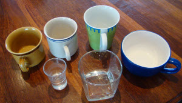
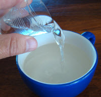
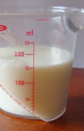
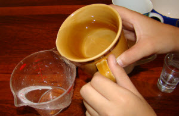
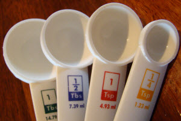
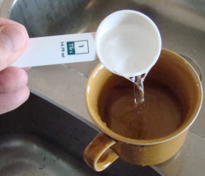

Activity: Discover Capacity (Volumes)
It is interesting to find how much things can hold, so today we will ...
Measure Capacity!
You will need:
- Measuring Cup (for larger items)
- Measuring Spoons (for smaller items)
- Pen and paper
Relative Sizes

Find Cups around the house ...
... include at least one small one.

Now, use the small one to fill each of the other ones in turn.
Record your results here:
| How Many | ||
| Description of Cup or Glass | Guess | Actual |
| Smallest | 1 | 1 |
Measured Sizes
Use a Measuring Cup to measure how many milliliters (ml) or fluid ounces (fl oz) fit into each of your cups or glasses.

A measuring cup showing 150ml

Pouring a cup into a measuring cup.
What if the cup is larger then the measuring cup?
Fill the measuring cup to the top mark, empty it and start again. Add up the total.
| Capacity (ml or fl oz) | ||
| Description of Cup or Glass | Guess | Actual |
Spoons
We can also measure capacity using measuring spoons.

Measuring Spoons(TbsmeansTablespoon, Tsp means Teaspoon)

Pouring a tablespoon of water into a cup
This time we will count how many tablespoons (tbs) you need to fill a cup. A tablespoon holds about 15ml.
| Tablespoons | ||
| Description of Cup or Glass | Guess | Actual |
From Smallest to Largest
Last, list all the items you measured, from the smallest to largest capacity.
Example: Tiny clear glass, small white cup, ...